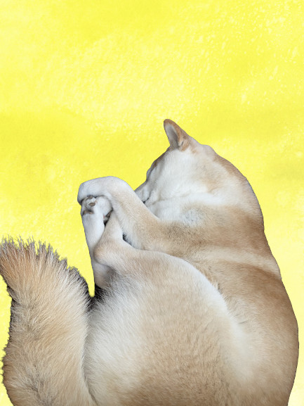

揃えておくといいもの
- サークル・ゲージ
-
- ワンちゃんが生活する場所を１つ決めてあげるとそこが落ち着く場所になるので安心してくれます
- ベット
-
- 自分のにおいがついているものがあると安心するものなので、ベットを用意しておくといいです
- トイレマット・シート
-
- 最初は失敗してしまいますが、柴犬は賢いのでトイレトレーニングを数回行うと覚えてくれる子が多いです。覚えるのが遅くても根気強く教えることで覚えてくれます
- ごはん・水用の容器
-
- むさしはゲージやサークルに付けて使うウォーターボトルは飲みにくそうだったので、ごはんと同じお皿を使っています
- 日頃食べていたごはん
-
- ワンちゃんにもよりますが、むさしは好き嫌いが激しかったので、飼い始めは以前まで食べていた食べ慣れているごはんをあげることをお勧めします
- おもちゃ
-
- 柔らかいボールや綿が入ったぬいぐるみはすぐに壊されてしまうので、テニスボールなどの固いボールや縄でできている引っ張りあえるものの方が壊される心配はないです
- 首輪・ハーネス
-
- 首輪はサイズが合っていないと抜けて、散歩中に逃げ出してしまうので、サイズが合っているものを付けてあげてください
- リード
-
- ウンチ袋
-
- ブラシ
-